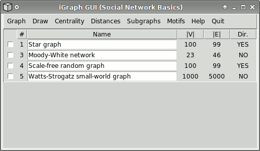

tkigraph is a basic Graphical User Interface (GUI) to some igraph functions.
What is tkigraph?
tkigraph is a simple Graphical User Interface to the igraph R package. R is a general purpose programming language and environment, used mostly but not exclusively for statistical analysis. igraph is an extension package to R. tkigraph lets you use some basic features of igraph via a GUI, instead of typing in R commands.
Installing and starting tkigraph
Well, if you are reading these lines, then you probably already know how to install and start tkigraph. If not, here is how to do it.
First, install the GNU R software package. It can be downloaded from the R website, but first check your system, because it might be already installed. You can also ask your system administrator to install it for you.
Second, you need to install the igraph extension package. First, start R by clicking on its icon in Windows, or by typing "R" into a terminal and pressing ENTER on Linux. Now type in
install.package("igraph")
and press ENTER. After choosing an appropriate mirror site, R
downloads and installs the igraph package.
Third, you need to load the igraph package and start tkigraph. This can be done by typing
library(igraph)
tkigraph()
(in two separate lines, pressing ENTER after each line)
into your R session. You should see a new windows appear, it
looks like the one on the picture below.
The tkigraph window
The main window of tkigraph look like this:

Almost all the window is occupied by the list of graphs in the
workspace. Unlike on the picture for you this is initially
empty. Every graph has a number, in the # column, a
name that is not necessarily unique, you can change the name of
the graph to whatever you like. In the last three columns you
can see the number of vertices and edges in the graph, and
whether it is directed or not.
In the leftmost column there is a checkbox for every graph, you can select one or more graphs using this and then perform operations on them. Some operations require exactly one graph to be selected, others work happily on many graphs as well. You will always get an error message if not the appropriate number of graphs were selected for an operation.
The tkigraph menus
Creating new graphs or performing operations on them can be done by selecting entries from the main menu. Let us discuss briefly what the various menus are good for.
Graph menu
The Graph menu lets you create and delete graphs, show them in an edge list format, calculate some basic properties for them. Moreover all file-related operations are here a well.
Draw menu
In this menu you can draw your graphs using various layouts, possibly also interactively. There are two entries in the menu. The first one (Simple) tries to do the plotting automatically; first it chooses an appropriate layout for the graph and then tries to guess the graphical parameters to make the plot look good. Finally it creates a non-interactive plot.
The advanced plotting lets you choose various graphical parameters, and you also have the possibility to create an interactive plot.
Centrality menu
Lets you calculate various degree centrality measures, plus edge betweenness. The results are always shown in a table that can be sorted according to all of its columns and the data can also be exported into a text file.
Distances menu
Various measures related to path lengths in the network are included in this menu.
Subgraphs menu
This menu contains three slightly related entries. Components are maximal connected subgraphs of a graph. Communities are natural modules in the graph, a module is a subgraph that has more edges within the module than between the module and the rest of the graph. (Loosely speaking.) In the 'Communities' menu you can run the Spinglass algorithm by J Reichardt and S Bornholdt. Cohesion measures how difficult it is to disconnect a graph by removing vertices from it. The last menu entry calculates cohesion for all components in the selected graph.
Motifs menu
Motifs are small subgraphs with a given structure. The first menu entry in this menu just plots all possible motifs of a given size in a directed or directed graphs. The second menu entry finds all the different motifs in the selected graph and plots all the different motifs annotated with the number of motifs of that kind found in the graph. It also plots a histogram for the various motifs.
Help menu
This is what you are reading right now.
Quit
Not really a menu, just a button. Lets you quit from tkigraph.